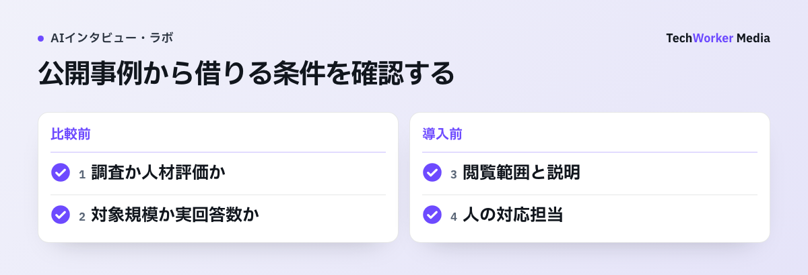
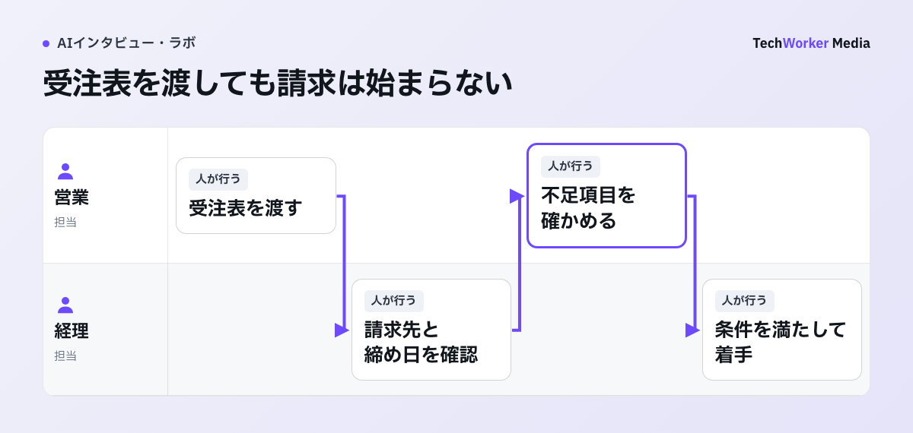

公式事例：SHIFT AI「mentai」導入事例（2026年10月6日確認）
公式ページは、約5,200人を対象としたAIとの1on1と、対話を有用とした社員79%を報告しています。ここから借りるべきなのは数字の大きさではなく、AIが聞き、人が離職リスクへの対応を判断する役割分担です。対象人数、実施率、成果指標を混ぜずに読みます。
出典：SHIFT AI公式事例。公表値は同社条件での報告であり、他社での再現を保証しません。
本記事は、各社の公開情報（プレスリリース・公式記事）を元にした市場事例の整理です。各取り組みは各社独自、またはそれぞれのツールによるもので、当社サービスの導入事例ではありません。出典は参考文献から確認できます。
公開事例から借りられる運用条件
国内7社・海外3社のうち、AIが社員と直接対話する類似度Aの8事例では、対象者から聞き、AIが整理し、人が判断する運用が見られます。

約3万人を対象にすることと、約3万人の回答が得られたことは同じではありません。比較表は対象規模として読み、実回答人数や改善幅が公表されていない項目は補いません。公表された成果も各社の条件での報告です。自社の導入条件には、目的、閲覧範囲、人が対応する工程だけを選んで移します。
スコアだけを集める従業員サーベイでは、回答理由までは分かりません。自由記述で理由を尋ねても、短い回答の意味を確かめるには追加の聞き取りが必要になります。
この「一往復の壁」を越える手段が、AIが社員一人ひとりにインタビューする取り組みです。AIが追質問し、集まった発言をテーマや論点に構造化して、人事や経営に渡します。選択式のサーベイだけでは見えにくい理由や文脈を、対象者との対話で集める仕組みです。実際に得られる回答数は、参加率などで変わります。
直接対話する類似度Aの8事例を中心に、次の運用が見られます。分析をAIへ任せる類似度Bと、人材評価を目的とする類似度Cは、同じ型の根拠には含めません。
- SHIFT約5,200人、トリドール約3万人、豪CPL2,700人など、全社員規模を対象とした公表例があります。すべての事例が全社員を対象にしているわけではありません。
- 公表事例で目立つのは、発言を構造化する工程です。発言をテーマ・リスク・合意対立・アクションに整理し、経営へ渡す成果物として報告されています。独立した因果検証とは区別します。
- 類似度Aでは、AIが対象者から聞いて整理し、人が経営判断や個別フォローを担う役割分担が見られます。人材評価の類似度Cは別の用途として、人の最終判断を挟む設計で検討します。
各事例には類似度ラベルを付けました。
- A＝同型：AIが社員と直接対話・追質問し、複数人の回答を構造化・可視化します。
- B＝近接：インタビュー自体は人が行い、AIが記録・分析・構造化を担います。
- C＝参考：AIが直接インタビューしますが、主目的は人材評価です。
国内7事例の目的と公表範囲
SHIFT約5,200人、トリドール約3万人など、全社員規模の運用例が国内で公開されています。
1. SHIFT「mentai」——約5,200人と対話し、114種の悩み要因を可視化（類似度A）
SHIFTの「mentai」は、AIメンターが社員と約10分対話し、悩みや言語化されていない感情を深掘りします。回答はタグ化・定量化され、人事・管理職の介入につながります。
約5,200人と対話して、114種の悩み要因を可視化しました。対話を有用とした社員は79%、フィードバックを有用とした社員は75%です。AIとの1on1の実施率は、約95%です。低スコアで退職者を捉える割合は、従来のES調査の約3倍になったとしています。
2. トリドールHD／丸亀製麺——約3万人を対象に、8言語で幸福度を可視化（類似度A）
トリドールHD（丸亀製麺）の「ハピネススコアインタビュー」は、AIが全店舗従業員と音声で対話し、幸福度や潜在的な不満を可視化します。対象は約3万人です。雑談から入って心理的安全性をつくる設計です。
共同開発・提供会社のアルサーガパートナーズは、全体展開の前に3回のPoC（本格導入前の試験導入）で600人超の声を反映し、8言語対応により外国人スタッフの定着率向上につながったと公表しています。トリドール自身の検証資料ではなく、改善幅も非公開です。
3. サイボウズ「いどばたシステム」——約50人の本音を5分で可視化（類似度A）
サイボウズの「いどばたシステム」は、AIチャットで社員の意見を集めるワークショップです。重要論点・合意点・対立点を即時に抽出し、約50人の本音を5分で可視化したとされています。継続的なサーベイとは別に、その場の議論へ適用した例です。
4. 共立コンピューターサービス「ココボイス」PoC——匿名対話で本音を経営陣へ（類似度A）
アイティフォーの「ココボイス」は、匿名のスマホアプリ上で生成AIが社員と対話し、本音を深掘りして経営陣へレポートします。共立コンピューターサービスのPoCは、一部社員から全社員へ展開されました。
提供会社は、2025年のPoC全体で約300人規模を検証したと公表しています。不満だけでなく、前向きな改善アイデアも引き出せたとしています。
5. PeopleX——入社後フォロー面談をAI化し、人事は要フォロー者に集中（類似度A）
HRのPeopleXは、入社1・3・6カ月のフォローアップ面談をAIが実施する自社検証を公開しています。入社者の状態をスコア化・構造化し、面談のリードタイムを大幅に短縮したと公表しています（定量値は未公表）。人事は、要フォロー者への個別対応に集中できます。
6. 富士通「AImインタビュー分析アプリ」——30分の記録を約3分で構造化（類似度B）
富士通の「AImインタビュー分析アプリ」は、類似度Bの事例です。インタビューは人が行い、その文字起こしを生成AIが7項目に構造化します。
30分のインタビューを約3分で約1,800字に構造化し、工数は従来比15%（＝85%削減）でした。12用途50件超で検証し、社内展開されています。後工程の構造化を、AIが桁違いに圧縮できる例です。
7. 日本管財HD——昇格試験の小論文を対話型AI面接に置換（類似度C）
日本管財HD／日本管財は、係長級から課長級の昇格審査で、小論文を対話型AI面接に置き換えると公表しました。2025年9月に試験導入し、2026年4月に本導入しています。評点・ランク・出現率をレポート化し、試験から結果確認までの期間を短縮するとしています。
主目的は人材評価です。評価用途の論点は、導入を崩す匿名性・評価・担当の混同で扱います。
海外3事例の目的と公表範囲
豪CPLは2,700人と四半期ごとに2年間対話し、米国ではQualtricsがサーベイにAI追質問機能を組み込みました。以下の3件は、いずれもサービス提供会社が公表した顧客事例であり、顧客企業自身の発表や独立検証ではありません。
8. CPL「Lee」（豪）——2,700人の全従業員と四半期ごとに対話、2年間運用（類似度A）
オーストラリアの障害福祉サービス企業CPLは、2,700人の全従業員に会話型AI「Lee」を展開しています。入社時から退職時まで、四半期ごとに継続対話する設計で、2年間運用されています。従業員・管理職・取締役会の参加は、継続的に増加しています。
9. Judo Bank「JEDI」（豪）——毎週のパルス確認をAIが深掘り、37論点に分類（類似度A）
オーストラリアのJudo Bankの「JEDI」は、毎週SMSでウェルビーイングを確認します。気になる回答には、会話型AI「EVE」が理由を深掘りします。回答は37の論点に分類され、リアルタイムダッシュボードに反映されます。
10. Burns & McDonnell × Qualtrics——曖昧な自由回答にその場でAIが追質問（米・類似度A）
Burns & McDonnellは、Qualtricsの会話型フィードバック（Conversational Feedback）機能を利用しています。曖昧な自由回答にAIがその場で追質問する機能です。
Qualtricsは、同機能の初期導入群で、従来手法より最大40%多く価値ある洞察を取得したと公表しています。この40%は初期導入群全体の結果です。Burns & McDonnell単社の改善率ではありません。
CoeSignalを業務実態の把握に使う
事例の中心は組織サーベイ領域です。CoeSignalは同じ仕組みを、業務実態の把握とAI活用テーマの発見に使います。
10事例の中心は、従業員エンゲージメント、離職予兆、組織課題、オンボーディング、昇格審査という人事・組織領域でした。
CoeSignal（株式会社TechWorkerが提供するAIインタビュープラットフォーム）は、この仕組みを、業務の実態把握と、AI活用・業務改善テーマの発見・優先順位づけに向ける設計です。エンゲージメントスコアの代わりに、次の3点を対象者から声で集め、改善テーマとして構造化する設計です。実際の回答数は参加率などによって変わります。
- どの業務に時間が溶けているか。
- どこで手作業と待ちが発生しているか。
- 現場は何から自動化してほしいか。
事例を業務図へつなぐなら、部署間の受け渡しをどう聞きますか？
部署名ごとに業務を列挙するだけでは、渡した後の待ち時間が消えます。一つの仕事の開始と終了を決め、渡す物、渡す側の完了条件、受ける側の着手条件を両方へ聞きます。
たとえば営業が「受注表を送れば完了」と答え、経理が「請求先と締め日がそろえば着手」と答えた場合、AIに一文へ統合させません。食い違いを未確認として残し、同じ案件の資料やログで確かめます。聞き取りによる時間は実測値にせず、システム記録がある工程はログを優先します。

公開事例に共通する人の判断工程
直接対話する類似度Aの8事例では、対象者から聞く、回答を構造化する、人が判断やフォローを担う運用が見られます。全社員規模は一部の公表例の特徴です。
パターン1：全社員を対象とする公表例がある
AIが聞き手になることで、全社員規模を対象とする公開事例があります。実回答数や運用条件は事例ごとに確認します。
パターン2：回答を構造化して渡す
類似度Aでは、SHIFTが114種へのタグ化、サイボウズが重要論点・合意点・対立点の抽出、Judo Bankが37論点への分類を公表しています。類似度Bの富士通も7項目への構造化を示していますが、AIが直接聞く運用とは分けて読みます。集めた声が議事録のまま眠る設計では、規模を上げても意思決定は変わりません。
パターン3：AIだけで完結させない
類似度Aでは、AIが対象者から聞いて整理し、その後を人が担う例が見られます。公表資料だけで質問の品質が全員で同じと確認できるわけではありません。SHIFTでは人事・管理職が介入し、PeopleXでは人事が要フォロー者に集中します。ココボイスでは、レポートを受けた経営陣が動きます。
導入を崩す匿名性・評価・担当の混同
匿名性の説明が曖昧なとき、評価目的と混ぜたとき、評価で人の最終判断を外したときに崩れます。
社内の声を扱う以上、設計を誤ると、「本音を聞く仕組み」が「本音が消える仕組み」に変わります。導入前に決める論点は3つです。
1. 匿名性と開示範囲を先に明文化する
回答が誰にどう見えるのかが曖昧だと、社員の発言は慎重になります。匿名で集計・要約を渡す方法と、記名で個別フォローにつなげる方法があります。回答者に事前に明示されていることが、絶対条件です。
2. エンゲージメント目的と評価目的を混ぜない
「率直に話してほしい」と言って集めた声が人事評価に使われるなら、率直に話すことをためらう社員が出るおそれがあります。目的、データの流れ、本人への説明を、別立てにします。1つの仕組みに両方を載せると、どちらの目的も損ないます。
3. 評価用途では説明責任と人の最終判断を外さない
評価用途では、AIの分析結果を人事上の最終判断として自動利用する前提にしません。必要なのは2つです。本人に「なぜその評価か」を説明できること。レポートを踏まえて人が最終判断を下すプロセスを、制度に組み込むことです。
10事例の規模・目的・公表成果
対象規模は約50人から約3万人まで幅があり、類似度Aの事例が10件中8件を占めます。
| 企業・取り組み | 対象規模 | 類似度 | 公開されている成果の要点 |
|---|---|---|---|
| SHIFT「mentai」 | 約5,200人 | A | 114種の悩み要因を可視化。対話を有用とした社員79%・AIとの1on1実施率約95% |
| トリドールHD／丸亀製麺 | 約3万人（全店舗従業員） | A | 8言語対応。外国人スタッフの定着率向上につながったと公表（改善幅は非公開） |
| サイボウズ「いどばたシステム」 | 約50人 | A | ワークショップ参加者約50人の本音を5分で可視化 |
| 共立コンピューターサービス「ココボイス」PoC | 一部社員→全社員に展開 | A | 匿名アプリ上でAIが本音を深掘りし、経営陣へレポート |
| PeopleX（自社検証） | 入社1・3・6カ月の入社者 | A | 面談リードタイムを大幅短縮と公表（定量値は未公表） |
| 富士通「AImインタビュー分析アプリ」 | 12用途50件超で検証 | B | 30分のインタビューを約3分で構造化、従来比15%の工数 |
| 日本管財HD／日本管財 | 係長級→課長級の昇格審査 | C | 小論文を対話型AI面接に置換。試験から結果確認までを短縮 |
| CPL「Lee」（豪） | 2,700人（全従業員） | A | 四半期ごとの継続対話を2年間運用。参加が継続的に増加 |
| Judo Bank「JEDI」（豪） | 毎週のウェルビーイング確認 | A | 回答を37の論点に分類しリアルタイムダッシュボード化 |
| Burns & McDonnell × Qualtrics（米） | 自由回答へのAI追質問 | A | 同機能の初期導入群では従来手法より最大40%多く価値ある洞察（※単社の数値ではない） |
よくある質問
選択式のサーベイは回答の分布を把握するのに使えます。自由記述で理由を尋ねる場合も、短い回答の意味を確かめるには追加の聞き取りが必要になることがあります。AIインタビューは、回答に応じて追質問し、理由を言葉のまま集めてから構造化します。SHIFTでは、低スコアで退職者を捉える割合が従来ESで低スコアだった退職者11.6%に対し、mentaiでは34.2%を捉え、約3倍になったと報告されています。分布の把握と理由の深掘りで役割を分け、併用するのが実務的です。
公開事例には対話への有用評価があります。ただし、本音の真偽を直接検証した数字ではありません。SHIFTでは、対話を有用とした社員が79%、AIとの1on1の実施率が約95%と公表されています。トリドールは雑談から入る設計、ココボイスは匿名アプリでの対話で、話しやすさを仕組み側で担保しています。回答が誰にどう見えるかが曖昧だと発言は慎重になるため、匿名性と利用目的の明示が前提です。
自動で確定させる設計は避けるべきです。日本管財の事例は、AI面接の結果を評点・ランク・出現率のレポートとして扱っています。評価用途では、「なぜその評価か」を説明できることと、人による最終判断を挟むことが必須です。エンゲージメント目的で集めた声を同意なく評価に転用すると、以後、率直な回答をためらう社員が出るおそれがあります。
試験導入で残す条件と判定記録
公開事例の対象人数を目標値にせず、一つの部署間受け渡しから試します。開始前に、回答原文を見られる人、個人評価へ使わない範囲、有人対応が必要な発言、実査後に決めることを記します。
聞き取りでは、渡す側の完了条件と受ける側の着手条件を別々に残します。AIが両方を一文へまとめても、原文の食い違いは消しません。資料やログと照合できた工程だけを確定し、残りは未確認として業務図へ載せます。
試験終了時は、参加率、途中離脱、未確認の受け渡し、個別フォロー件数を報告します。他社の公開成果と同じ効果が出たとは扱いません。
参考文献
出典を、事例の当事者企業が公表した資料と、サービス提供会社が公表した顧客事例に分けます。後者は公式情報ですが、顧客企業自身の公表や独立検証と同じ強度ではありません。
当事者企業・自社検証の公表
- SHIFT公式note「mentai」に関する記事. 記事ページ（SHIFT公式note）
- サイボウズ「AIツールと私たちの働き方」（いどばたシステム）. 公式サイト（サイボウズ）
- PeopleX セミナー告知（入社後フォローアップ面談のAI化・自社検証）. 公式サイト（PeopleX）
- 富士通公式note「AImインタビュー分析アプリ」. 記事ページ（富士通公式note）
- 日本管財ホールディングス ニュースリリース（昇格試験へのAI面接導入）. 公式サイト（日本管財HD）
サービス提供会社の公表
- SHIFT AI「mentai」導入事例. 公式サイト（SHIFT AI）
- アルサーガパートナーズ プレスリリース（トリドールHD／丸亀製麺「ハピネススコアインタビュー」）. プレスリリース（アルサーガパートナーズ）
- アイティフォー「ココボイス」プレスリリース. プレスリリース（PR TIMES）
- アイティフォー ニュースリリース（ココボイス・共立コンピューターサービスPoC）. 公式サイト（アイティフォー）
- Evolved Thinking, Customer Story: CPL「Lee」. 事例ページ（Evolved Thinking）
- Evolved Thinking, Blog: Judo Bank「JEDI」. 記事ページ（Evolved Thinking）
- Qualtrics, X4 2026 発表（Conversational Feedbackを含む新EX機能）. ニュースページ（Qualtrics）